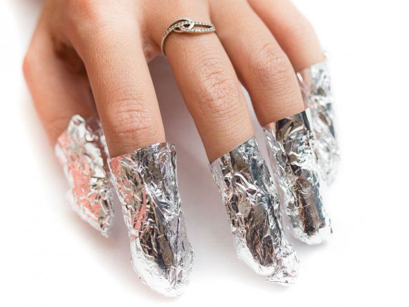
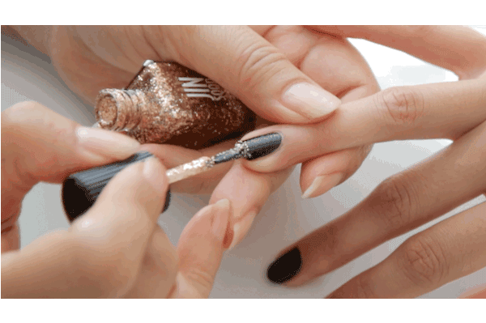
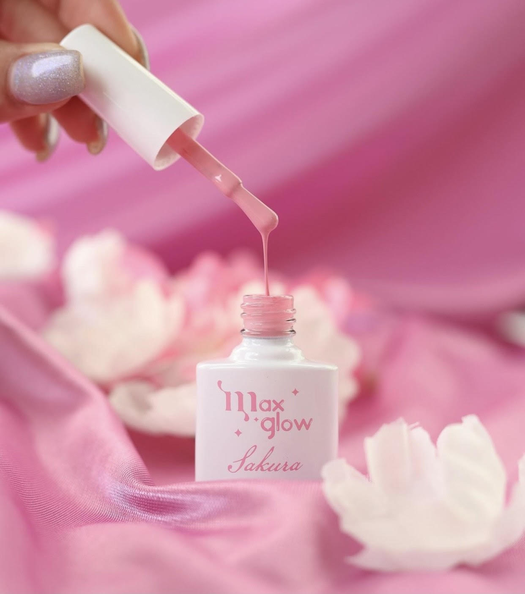

El sistema Jelly tips se trata de una extensión de uñas con una aplicación más rápida y sencilla ya que no requiere de ningún tipo de acrílico. Vienen con formas predefinidas, pero también pueden ser adaptadas al gusto del cliente.
Tips
1-Hidrata tus manos y uñas
Una buena hidratación regula los niveles de agua de la piel, consiguiendo que la barrera protectora se vea fortalecida y más flexible.
La hidratación previene la sequedad y, como tal, la protege del sol, el frío o el aire, sus mayores enemigos.

2- Procura aplicar y retirar el producto correctamente de las uñas
Si no tienes demasiada experiencia y quieres probar las uñas acrílicas, te recomendamos que te pongas en manos de manicuristas con experiencia. Las uñas acrílicas son seguras siempre que cuidemos la manera de hacerlas, retirarlas y evitemos levantamientos y bolsas de aire. Por ese motivo, poner el foco en una buena aplicación del producto es clave para garantizar la seguridad y la durabilidad de tu manicura.

También es importante realizar un buen retirado de las uñas esculpidas. Esta técnica de manicura (al igual que las uñas permanentes o de gel) no tiene por qué perjudicar a tus uñas naturales, pero un proceso de retirado mal realizado puede debilitar las uñas naturales, por lo que es aconsejable que las retire un profesional.
Realiza rellenos regularmente
Lo ideal es hacer el relleno en un máximo de 21 días. Esto dependerá del crecimiento de tu uña natural. Si las dejamos más tiempo, nos arriesgamos a causar levantamientos y daños por la pérdida de la nivelación en los puntos de tensión de la uña. aclara María. Es totalmente desaconsejable intentar llevar tus uñas acrílicas más allá de su vida útil y no estar al día con los rellenos.

4- Ten en cuenta el estado de tus uñas natulares
Seguro que has escuchado varias veces que hay que hacer descansos entre manicuras para dejar respirar las uñas. Pues bien, venimos a desmontar un mito. No es necesario hacer parones entre manicuras siempre que las uñas naturales estén sanas y fuertes.
Usa productos de calidad
Te recomendamiendo que no te expongas a cualquier producto y que te asegures de que todo lo que se aplica sobre tus uñas y tu piel sea de buena calidad y cumpla con los estándares.

Ahora ya puedes disfrutar de una manicura acrílica y cuidarla como lo hacen los profesionales.